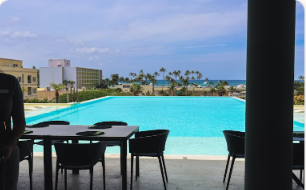
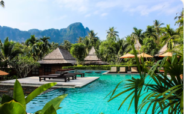

Taniti Grand Resort$$$$
The island’s only four-star property, with oceanfront rooms, a full-service restaurant, spa, and infinity pool overlooking Yellow Leaf Bay.
View details →Plan your stay
From a budget-friendly hostel to a four-star oceanfront resort — all lodging on Taniti is strictly regulated and inspected by the Tanitian government.

The island’s only four-star property, with oceanfront rooms, a full-service restaurant, spa, and infinity pool overlooking Yellow Leaf Bay.
View details →A family-run hotel in the heart of Taniti City, within walking distance of the beach, local restaurants, and the history museum.
View details →A charming bed and breakfast in the lively Merriton Landing area — ideal for guests who want easy access to entertainment, pubs, and the beach.
View details →
Nestled at the edge of Taniti’s rainforest, this peaceful B&B is perfect for nature lovers and hikers seeking a quiet retreat.
View details →The island’s most affordable option — a clean, sociable hostel near public transport, the beach, and local food stalls.
View details →This button represents an external provider booking link in the interactive prototype.